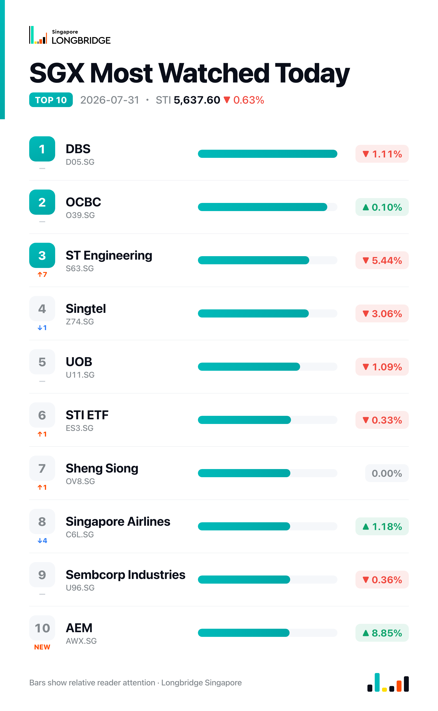

STI Slips 0.63% to 5,637.60 as ST Engineering's Valuation Stretch Triggers Steepest Slide
The Straits Times Index closed at 5,637.60 on Friday, down 35.98 points, or 0.63%, after ranging between 5,604.22 and 5,654.39 during the session. Decliners outnumbered advancers across the benchmark's 30 constituents, 14 lower against 12 higher and four unchanged, with ST Engineering leading the session's losses and DFI Retail leading the gains.
The pullback extended Thursday's weakness, when Federal Reserve Chair Kevin Warsh's decision to hold interest rates unchanged was read as prioritising price stability over near-term easing and weighed heavily on the three local banks. That pressure carried into Friday but rotated within the sector: DBS eased 1.11% and UOB fell 1.09%, while OCBC — Thursday's steepest bank decliner at -2.28% — edged up 0.10%.
Session Movers
DFI Retail (D01.SG, +5.61%) extended Thursday's 4.47% gain to a second straight advance after parent Jardine Matheson reported a 9% rise in H1 underlying profit to US$735 million, with DFI Retail among the stronger contributors alongside Jardine Pacific and Hongkong Land. DFI itself swung to a US$118 million interim profit from a year-earlier loss, raised its interim dividend and lifted full-year guidance. CGS International and DBS both kept Buy calls, at S$5.50 and S$5.00; the consensus Strong Buy rating carries a target implying about 29% upside.
ST Engineering (S63.SG, -5.44%) was the session's steepest decliner, pulling back with no fresh company-specific news a week after its consortium with Hyundai Rotem won an $840 million turnkey rail contract for Taiwan's Taoyuan MRT Brown Line. The drop came off a rich base: at 71.85 times earnings, the stock has traded above this level for roughly 94% of the past five years, leaving comparatively little room once broader sentiment turned negative.
Singapore Airlines (C6L.SG, +1.18%) rose for a second straight session, building on Thursday's 1.06% gain, after Randstad named SIA Singapore's most attractive employer for 2026 — its first time reclaiming the title since 2023 — alongside plans to invest S$1.1 billion in new cabin products and expand Starlink Wi-Fi. The advance extends this week's rebound from Wednesday's 3.09% drop, even as DBS and Citi maintain cautious Hold ratings following SIA's first-ever quarterly net loss of S$76 million.
UOB (U11.SG, -1.09%) declined alongside DBS as the two banks led Friday's session lower, with no fresh company news beyond its buyback leadership last week, when it repurchased S$13.4 million of shares over five sessions to 23 July, the largest among 13 companies buying back stock in that window. The bank now trades at 1.49 times book, above the top of its own one-year range of 1.21-1.33, though still the cheapest of the three local banks against OCBC's 2.09 times and DBS's 3.09 times.

One point worth noting
For a second straight session, Singapore's three banks did not move together. On Thursday, OCBC alone dropped 2.28% while DBS and UOB were little changed; on Friday, DBS (-1.11%) and UOB (-1.09%) led the trio lower while OCBC edged up 0.10%, effectively swapping places with the previous session's laggard. The same three stocks alternating which one leads and which one lags, rather than moving as a bloc, points to stock-specific positioning rather than a sector-wide re-rating.
This recap is for informational purposes only and does not constitute investment advice.